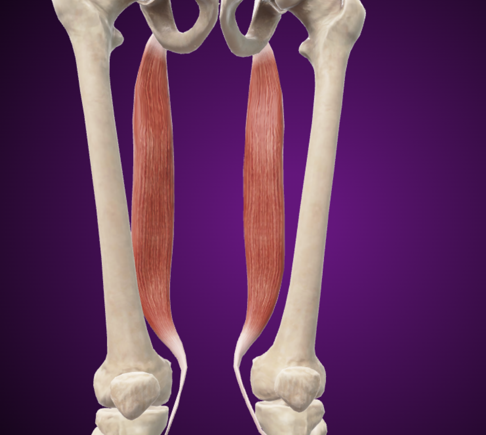
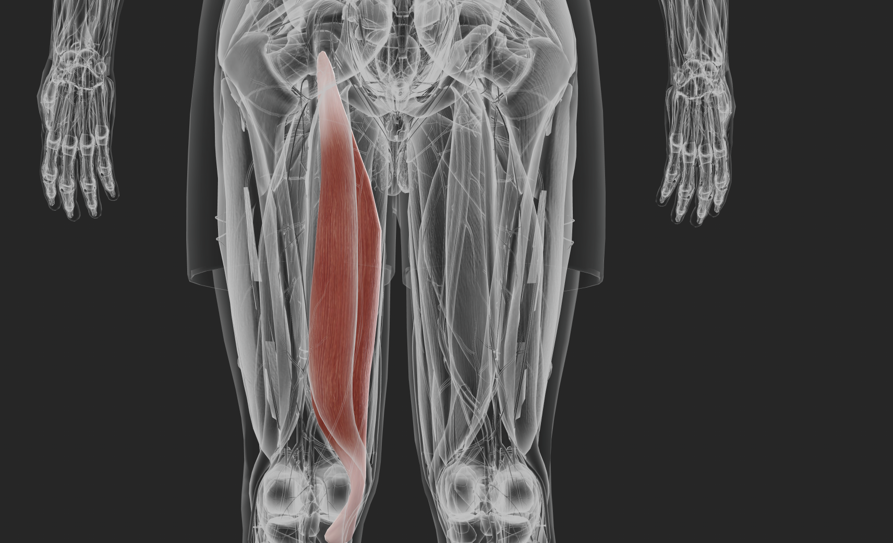

Mușchii coapsei În loja posterioară se află:

Mușchiul semitendinos

Mușchiul biceps femural

Sunt grupați în două loje:
1. Loja anterolaterală
a. Mușchiul tibial anteriorb. Mușchii extensori ai degetelor
2. Loja posterioară
Plan superficial:
a. Mușchiul gastrocnemianb. Mușchiul solearc. Împreună formează tricepsul sural
Plan profund:
a. Mușchiul tibial posteriorb. Mușchii flexori ai degetelor
Funcții:
a. Extensia labei picioruluib. Flexia degetelor
Aceștia sunt așezați pe:
a. Fața dorsalăb. Fața plantară